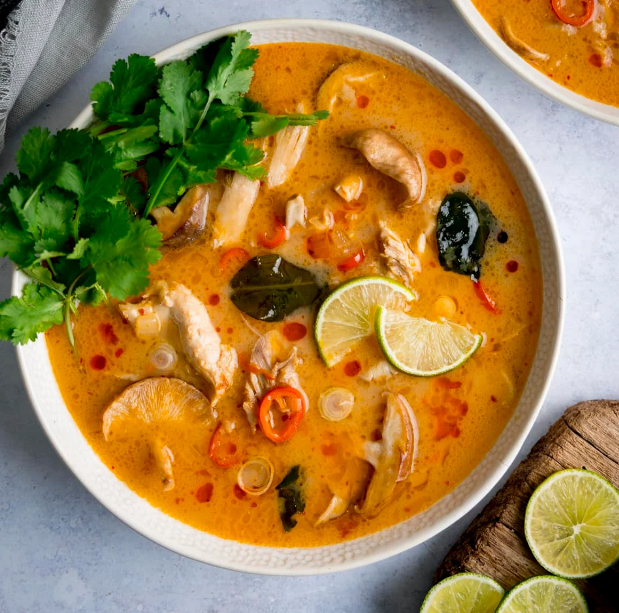

Tom Kha Gai Recipe

Discover the recipe
This tom kha gai soup recipe (or Thai coconut chicken soup) is absolutely perfect. Rich and creamy yet tangy and salty, this Thai coconut chicken soup recipe is filling but light and positively bursting with flavor. The very best tom kha gai recipe I've ever made or tried. With Whole30, paleo, and vegan options, too.
Ingredients
- 1 tablespoon coconut oil
- half of one onion
- 2 cloves garlic
- half of one red jalapeno pepper
- 3 1/4 inch slices galangal
- 1 lemongrass stalk
- 2 teaspoons red Thai curry paste
- 4 cups chicken broth
- 4 cups canned full-fat coconut cream
- 2 medium chicken breasts
- 8 ounces white mushroom caps
- 1-2 tablespoons coconut sugar
- 1 1/2 - 2 tablespoons fish sauce
- 2-3 tablespoons fresh lime juice
- 2-3 green onions
- fresh cilantro
Ready? Just follow these steps...
- In a medium pot, heat the coconut oil over medium heat. Add the onion, garlic, jalapeno or chile, galangal or ginger, lemongrass, and red curry paste and cook, stirring frequently, for 5 minutes, or until onions are softened. Add chicken broth and bring to a boil. Reduce heat and simmer uncovered for 30 minutes.
- Strain out the aromatics (the garlic, onions, lemongrass, and ginger) and discard. Add in coconut cream or milk, chicken breast (or tofu or shrimp), and mushrooms. Simmer until chicken breast pieces are just cooked through, then add fish sauce, coconut aminos (or coconut sugar), and lime juice, plus more of each to taste.
- Cook 2 minutes, then ladle into serving bowls and top with sliced green onions and fresh cilantro.
Congrats, you've just made Tom Kha Gai for 1! Enjoy!